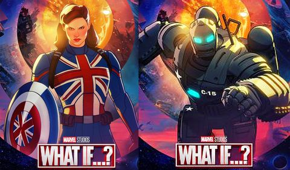
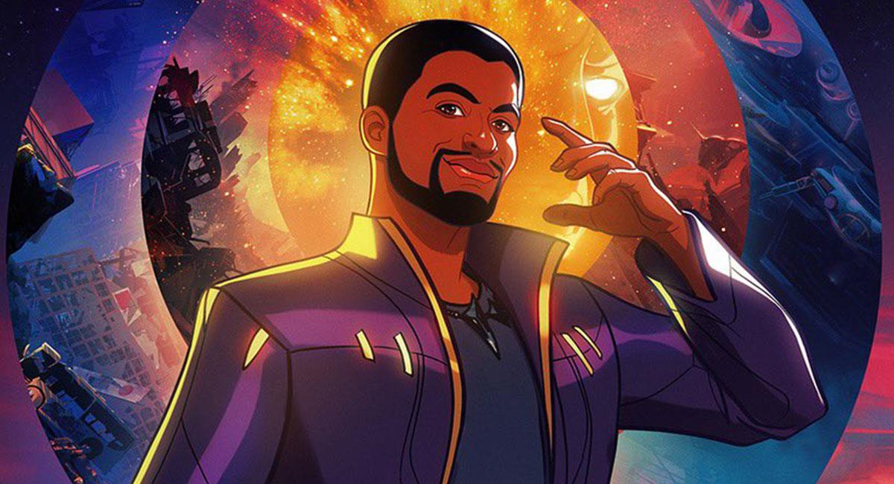
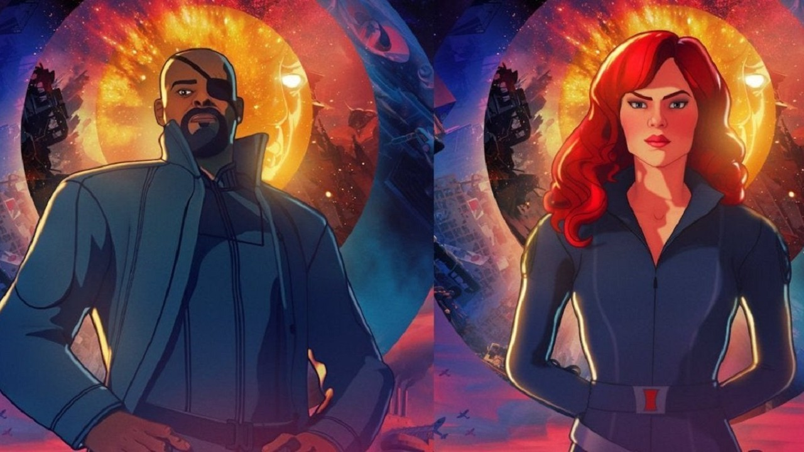
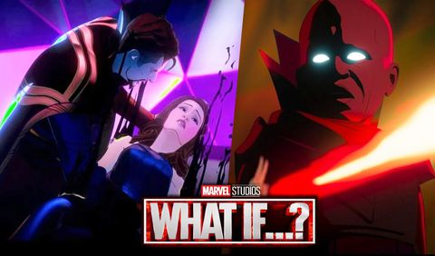
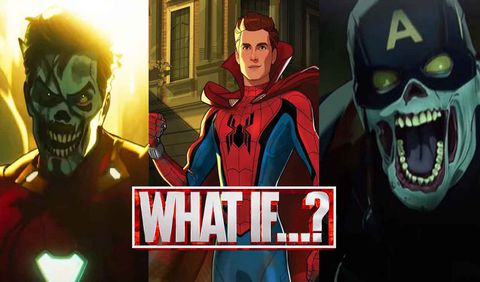

Los links de cada pagina pueden tener anuncios y/o ventanas emergenetes
What If...?
INICIO
The Avengers
WandaVision
Loki
Todos
INICIO
The Avengers
WandaVision
Loki
Todos
Y si... el capitán Carter fuerael primer vengador?

Cuando Steve Rogers resulta gravemente herido, Peggy Carter se convierte en la primera súper soldado del mundo.
Click aqui para ver el capitulo!
Y si... T'Challa se convirtiera en un Star-Lord?

Los rudos piratas espaciales conocidos como los Devastadores secuestran a T’Challa en lugar de a Peter Quill.
Click aqui para ver el capitulo!
Y si... el mundo perdiera a sus héroes más poderosos?

Nick Fury lucha por lanzar Los Vengadores cuando los candidatos son atacados por un asesino en serie.
Click aqui para ver el capitulo!
Y si... el Doctor Strange perdiera su corazón en lugar de sus mano?

Un Doctor Strange afligido usa el Ojo de Agamotto en un peligroso esfuerzo por cambiar el pasado.
Click aqui para ver el capitulo!
Y si... Zombies!?

Y ahora Zombies!!??
Click aqui para ver el capitulo!
Mas capitulos pronto!!
Segui visitando la pagina. Pronto mas contenido!
Todos los links de los capitulos son sacados desde la pagina
https://cuevana3.cc/
. Esto se hizo solamente para practica de estudio de Programacion Full Stack. Aguante NUCBA!!